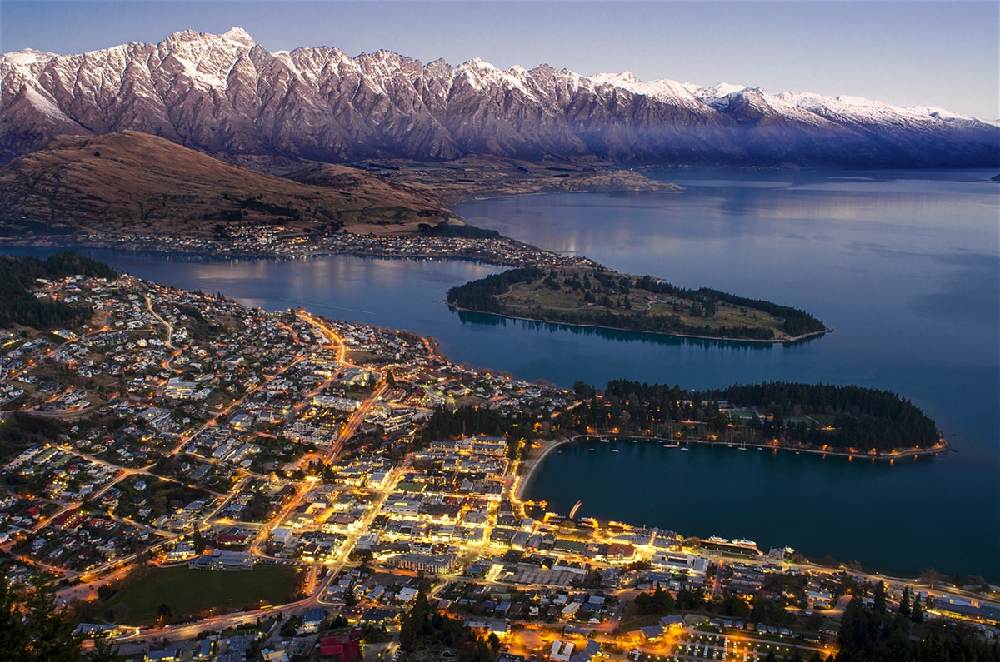
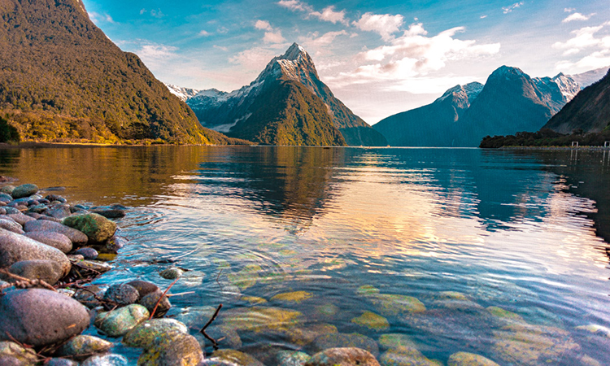
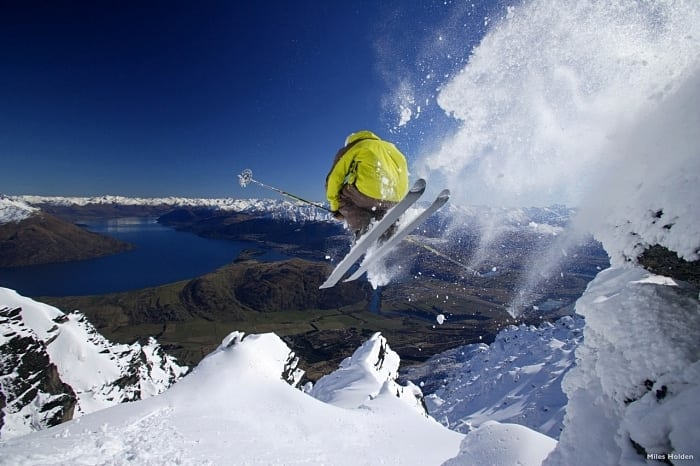
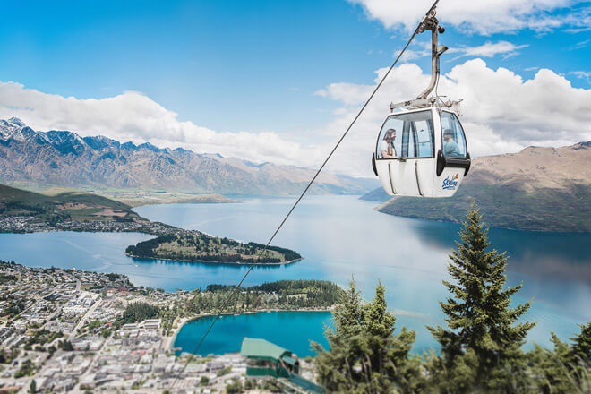

Queenstown, na Nova Zelândia, fica às margens do lago Wakatipu na Ilha Sul, com os Alpes ao fundo. Conhecida pelos esportes de aventura, é também um ponto de partida para explorar os vinhedos e as históricas cidades mineiras da região.
É possível fazer bungee jump na Ponte Suspensa de Kawarau e andar de jetboat nos rios Shotover e Dart. No inverno, pratica-se esqui nas encostas da cordilheira The Remarkables e do pico Coronet.
3 PONTOS TURISTICOS PARA VISITAR EM QUEENSTOWN
Milford Sounds
 É um dos principais cartões postais do país e a atração mais visitada de todas.
Milford Sounds são fiordes que fazem parte do Fiordland National Park. Dá pra fazer passeios que misturam viagem por terra e por água, saindo de Queenstown,
permitindo que se aproveite ao máximo a beleza do lugar.
Na verdade, não é só chegar aos fiordes que é o passeio, mas sim o caminho até lá, pois trata-se de uma das estradas mais bonitas do mundo. São duas horas até Te Anau e,
de lá, mais umas três horas até Milford Sounds – e é este trecho que é deslumbrante, te obrigando a fazer várias paradas para tirar fotos.
Estações de esqui
 Você sabia que entre as opções de o que fazer em Queenstown está esquiar? Pois é… a cidade é circundada por alpes altíssimos, proporcionando a chance de, além de esquiar,
praticar snowboard ou só brincar na neve. E isso a uma curta distância, tornando-a uma cidade base para os amantes dos esportes de inverno.
Quando caminhamos pelo centro da cidade no fim da tarde, o que mais vemos são pessoas carregando seus esquis e vestidos com roupas de neve,
pois estão voltando do dia nas estações que tem ali nos arredores.
A apenas a 25 minutos de carro fica Coronet Peak Ski Area, na montanha mais próxima da cidade. Já um pouquinho mais longe, a 35 minutos de carro do centro de Queenstown,
se encontra The Remarkables Ski Area.
Skyline Gondola
 A Skyline de Queenstown é um teleférico de gôndola (aqueles vagões que levam várias pessoas de uma vez) considerado o mais íngreme de todo o Hemisfério Sul!
Até o topo, chamado Bob’s Peak, são 450 metros de altura acima do lago Wakatipu. Dá pra subir também por trilha, caso tenha disposição e não queira ir pelo Skyline,
e lá em cima existem restaurantes com comida típica e também internacionais.
Além disso, lá do alto dá para pular de bungee jump e descer a montanha de “Luge”, que é uma espécie de carrinho de rolimã, que é bem divertido.
Você também pode se interessar por: